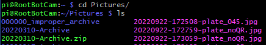
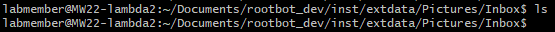
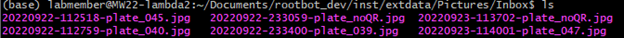
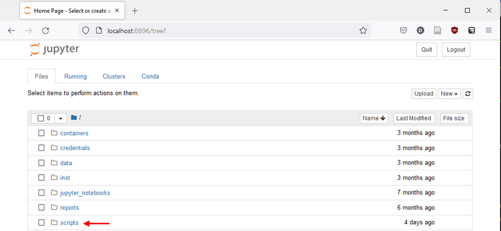
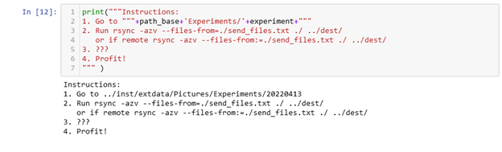

Using the Image Sorting Script
Log into
rootbot ssh pi\@10.206.31.189Move to Pictures
cd Pictures/
- Look in the folder with
ls– There will either be loose jpgs or they will be packaged into archive folders with the form “YYYYMMDD-Archive”
- Look in the folder with
Log into lambda2
ssh labmember\@MW22-lambda2On lambda2 move to the inbox
cd Documents/rootbot_dev/inst/extdata/Pictures/Inbox- We expect this inbox to be empty (but it’s okay if there are some jpgs here)

From the rootbot, copy the files over to lambda2
- If the jpgs are loose run (all one command)
rsync -azv ./\*.jpg labmember\@10.206.28.81:\~/Documents/rootbot_dev/inst/extdata/Pictures/Inbox/

Then make a folder to archive the jpgs in with
mkdir$-ArchiveThen copy each day’s files like so
mv\(\color{red}{202209}`\*.jpg ./`\)-Archive/Note! The red above will need to be customized
Note! If multiple experiments were run then you’ll need to specify each day that needs to be moved into each archive.
mv 20220922*.jpg ./20220922-Archive/mv 20220923*.jpg ./20220923-Archive/…
mv 20220929*.jpg ./20220929-Archive/mv 20220930*.jpg ./20220930-Archive/
- If the jpgs are loose run (all one command)
If the jpgs are not loose copy the jpgs from an archive (specify the archive name highlighted below)
rsync -azv ./$/\*.jpg labmember\@10.206.28.81:\~/Documents/rootbot_dev/inst/extdata/Pictures/Inbox/The terminal session on rootbot is no longer needed and can be closed.
Confirm the files have been moved with ls on lambda2

On lambda2, move back to “rootbot_dev” with
cd \~/Documents/rootbot_devOn lambda2, start up jupyter without a browser
jupyter notebook --no-browser --port=8896

Open a new terminal and connect the jupyter notebook to your machine ssh -N -f -Y -L 8896:localhost:8896 labmember\@MW22-lambda2

Open a browser and go to http://localhost:8896 (it will change to the url below if everything is okay).
- If you get a login page, you’ll need to copy and paste the token from step 10

- If you get a different error take a screenshot so we can debug it.
The screen should now look like this:

- Go to scripts

- Open the “sortmaster2000”

- Run the script cell by cell until you get to …

- … until you get to this cell which contains instructions on how to get the files to your local computer

Open a terminal on lambda2
If you want to run this command on lambda2
It’s okay to open a new ssh session as in step 3
- It’s also okay to reuse the terminal running the jupyter notebook. If you want to do this, press “control c”

- Follow the instructions in 17
- If you want to run this command locally, on your local machine run
rsync -azv --files-from:= labmember\@MW22-lambda2:\~/Documents/rootbot_dev/inst/extdata/Pictures/Experiments/\(\color{red}{20220915}\)/send_files.txt ./$ - Note: The red above will need to be customized. The folder will need to be set to the current value and
../dest/will need to be customized to the location on your computer you want.